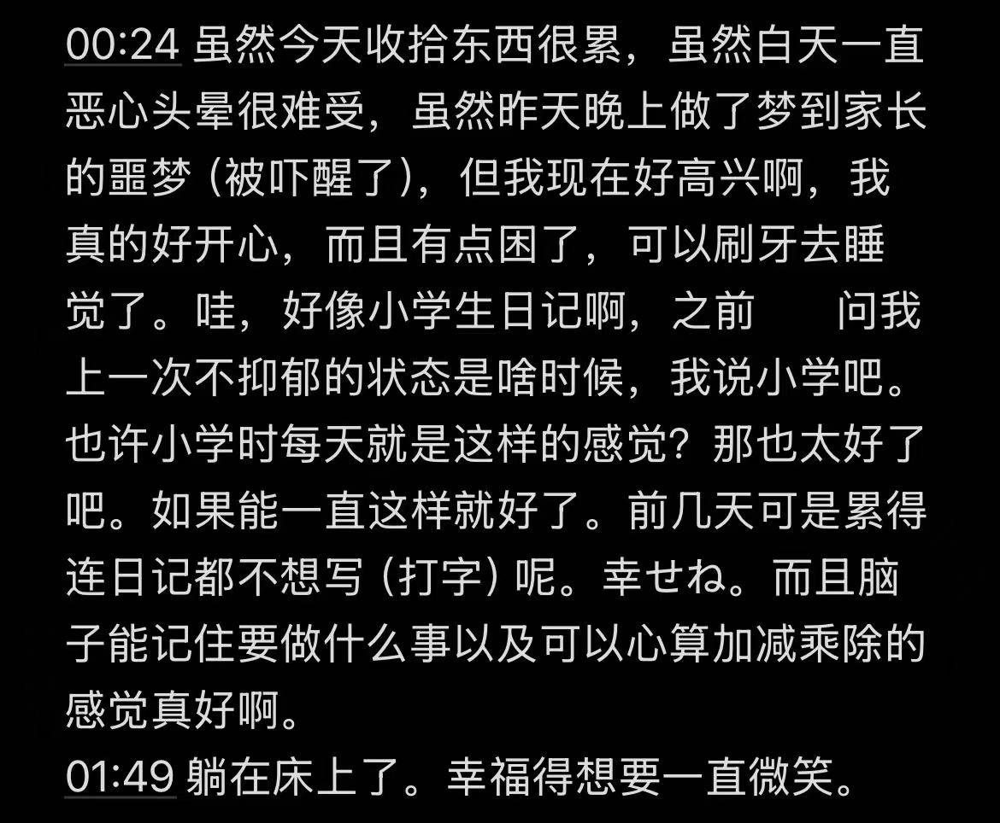

水月 郁寧
@lysosome807
其实这事的起源是七月初o了一瓶白兔，虽然被抗胆碱能和兴奋剂杂质创得快死了，但依然没有理由地高兴，一直在笑，笑得脸颊都僵了，显然这是二氢可待因的功劳。但药效褪去欣快消失后，我似乎依然维持在“不理解人为什么要自杀”的状态之中...明明知道不合理，但一直在害怕这依然是药效或者我有双相的可能性

水月 郁寧
@lysosome807
发现半个月没发推了诶...
七月上旬沉浸式体验了一个星期左右的健全生活（也许），至今也不知道怎么回事。像一场梦，或者和某人互换了一段记忆一样，大概就是每天醒来都很平静和清醒，只是天气还不错就觉得生活真美好，以及最诡异的就是我真的无法理解人为什么要自残，为什么要自杀（